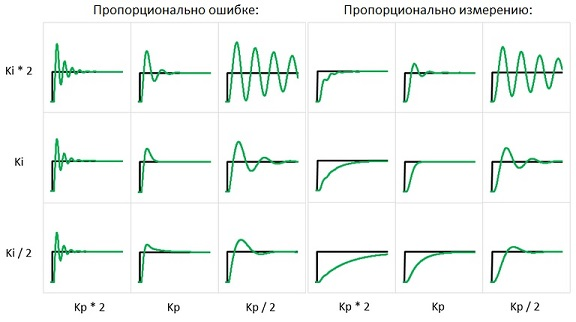

ПИД краткое описание
ПИД (от англ. P-proportional, I-integral, D-derivative) — регулятором называется устройство, применяемое в контурах управления, оснащенных звеном обратной связи. Данные регуляторы используют для формирования сигнала управления в автоматических системах, где необходимо достичь высоких требований к качеству и точности переходных процессов.
Управляющий сигнал ПИД-регулятора получается в результате сложения трех составляющих: первая пропорциональна величине сигнала рассогласования, вторая — интегралу сигнала рассогласования, третья — его производной. Если какой-то из этих трех компонентов не включен в процесс сложения, то регулятор будет уже не ПИД, а просто пропорциональным, пропорционально-дифференцирующим или пропорционально-интегрирующим.
Первый компонент — пропорциональный
Выходной сигнал дает пропорциональная составляющая. Сигнал этот приводит к противодействию текущему отклонению входной величины, подлежащей регулированию, от установленного значения. Чем больше отклонение — тем больше и сигнал. Когда на входе значение регулируемой величины равно заданному, то выходной сигнал становится равным нулю.
Если оставить только эту пропорциональную составляющую, и использовать только ее, то значение величины, подлежащей регулированию, не стабилизируется на правильном значении никогда. Всегда есть статическая ошибка, равная такому значению отклонения регулируемой величины, что выходной сигнал стабилизируется на этом значении.
Больше коэффициент усиления между входом и выходом — меньше статическая ошибка, но если коэффициент усиления (по сути — коэффициент пропорциональности) будет слишком большим, то при условии наличия задержек в системе (а они зачастую неизбежны), в ней вскоре начнутся автоколебания, а если увеличить коэффициент еще больше — система попросту утратит устойчивость.
Второй компонент - интегрирующий
Интеграл по времени от величины рассогласования — есть основная часть интегрирующей составляющей. Она пропорциональна этому интегралу. Интегрирующий компонент используется как раз для исключения статической ошибки, поскольку регулятор со временем учитывает статическую погрешность.
В отсутствие внешних возмущений, через какое-то время подлежащая регулированию величина будет стабилизирована на правильном значении, когда пропорциональная составляющая окажется равной нулю, и точность выхода будет целиком обеспечена интегрирующей составляющей. Но интегрирующая составляющая тоже может породить осцилляции около точки позиционирования, если коэффициент не подобран правильно.
Третий компонент — дифференцирующий
Темпу изменения отклонения величины, подлежащей регулированию, пропорциональна третья — дифференцирующая составляющая. Она необходима для того, чтобы противодействовать отклонениям (вызванным внешними воздействиями или задержками) от правильного положения, прогнозируемого в будущем.
Настройка ПИД регулятора
Есть два похода к настройке ПИД регулятора. Первый – синтез регулятора, то есть вычисление параметров регулятора на основании модели системы. Данный метод позволяет очень точно рассчитать параметры регулятора, но он требует основательного погружения в ТАУ.
Второй метод – ручной подбор параметров (коэффициентов). Это метод научного тыка проб и ошибок. Берем готовую систему, меняем один (или сразу несколько коэффициентов) регулятора, включаем регулятор и смотрим за работой системы. В зависимости от того, как ведет себя система с выбранными коэффициентами (недо/пере регулирование) опять меняем коэффициенты и повторяем эксперимент. И т. д. Ну, такой метод имеет право на жизнь, главное представлять как изменение того или иного коэффициента повлияет на систему (что бы не действовать совсем наугад).
Есть более «оптимизированный» метод подбора коэффициентов – метод Зиглера–Никольса.
Метод работает не для любой системы, результаты получаются не самыми оптимальными. Но, зато, метод очень простой и годится для базовой настройки регулятора в большинстве систем.
Суть метода состоит в следующем:
1. Выставляем все коэффициенты (Kp, Ki, Kd) в 0.
2. Начинаем постепенно увеличивать значение Kp и следим за реакцией системы. Нам нужно добиться, чтобы в системе начались устойчивые колебания (вызванные перерегулированием). Увеличиваем Kp, пока колебания системы не стабилизируются (перестанут затухать).
3. Запоминаем текущее значение Kp (обозначим его Ku) и замеряем период колебаний системы (Tu).
Все. Теперь используем полученные значения Ku и Tu для расчета всех параметров ПИД регулятора по формулам:
Kp = 0.6 * Ku
Ki = 2 * Kp / Tu
Kd = Kp * Tu / 8
Готово. Для дискретных регуляторов нужно еще учесть период дискретизации – T ( умножить на Ki та Т, разделить Kd на Т).
Вот некоторые правила, которые могут помочь при настройке ПИДа:
- Увеличение пропорционального коэффициента приводит к увеличению быстродействия, но снижение устойчивости системы (возбуждение)
- Увеличение дифференциальной составляющей также приводит к значительному увеличению быстродействия
- Дифференциальная составляющая призвана устранить затухающие колебания, возникающие при использовании только пропорциональной составляющей
- Интегральная составляющая должна устранять остаточное рассогласование системы при настроенных пропорциональной и дифференциальной составляющих
Кстати, стоит добавить, что не всегда необходимо использовать все три составляющие ПИД-регулятора, порой хватает пропорциональной и дифференциальной, например (ПД-регулятор). В общем, все сводится к тому, что для каждой системы необходим свой собственный подход при настройке и использовании ПИД-регулятора.
Народный контроллер
НК поддерживает три алгоритма управления ЭРВ
Алгоритм 1 (// #define PID_FORMULA2) - классический ПИД в конечных разностях. ПИД рассчитывает отклонение от текущей позиции, есть возможность уменьшения пропорциональной составляющей при 'подходе' к цели. Интегральная составляющая периодически обнуляется.
Алгоритм 2 (#define PID_FORMULA2) - адаптированный алгоритм ПИД Arduino-PID-Library, имеет по паре коэффициентов на каждую составляющую. Есть возможность выбора изменения ПИДа пропорционально ошибке или воздействию (см рисунок ниже)
Используются два набора составляющих ПИДа, если разница между целевым перегревом и текущим больше дельты(Δ), то используется верхний набор составляющих, а если меньше, то нижний.
Прямой алгоритм управления ЭРВ (можно менять настройками) - Управление без ПИД по двум перегревам. В зависимости от ошибки и ее тренда крутим ЭРВ в нужную сторону. Если есть превышение порога, то по множителю, иначе по одному шагу. Сначала управляется по выбранному алгоритму перегрева, потом, когда он установлен в заданном пределе, по перегреву на входе компрессора TCOMPIN-T[PEVA] (Overheat2).
Алгоритм 2

Особенности контроля перегрева при использовании формулы TEVAOUT-T[PEVA]Реальный перегрев по этой формуле достаточно сложно вычислить надо понимать что:
1. Если датчик температуры TEVAOUT закреплен НЕ на выходе из испарителя, а например после четырехходового клапана (использование одного датчика для охлаждения и отопления) то вносится ошибка (может быть 2-4 градуса) которая еще и изменяется в зависимости от режимов работы ТН. В этом случае перегрев надо ставить выше например 6-8 градусов.
2. При креплении датчика TEVAOUT на выходе испарителя необходимо понимать что все равно будет ошибка чтения температуры. Для уменьшения ошибки, необходимо датчик правильно закрепить на трубке (паяная гильза, термопаста, большой контакт, теплоизоляция). Проверка - перегрев в выключенном ТН должен стремится к 0 градусов (при необходимости надо ввести поправку перегрева - страница "Настройки ЭРВ"->"Определение перегрева"->"Поправка °С").
3. Качество поддержки перегрева (работа ПИДа) определяется качеством холодильной машины. Если холодильная машина собрана правильно то можно использовать стандартный ПИД (формула 1) и добиться поддержания +-0.3 градуса (за исключение переходных процессов) и отсутствие залития компрессора. Если это не получается сделать необходимо переходить на PID_FORMULA2 или на прямое управление.
4. Настройку работы ЭРВ надо начинать с большого перегрева например 7-8 градусов. Необходимо добиться хорошей работы ПИДа и только потом уменьшать перегрев. Стабильная работа ЭРВ только при большом перегреве говорит о том что, есть большая ошибка при вычислении перегрева и/или холодильная машина собрана не качественно.
5. Надо четко понимать что вычисленный перегрев и реальный перегрев может быть сильно разными (см п.1 и п.2), необходимо оценить ошибку вычисления и ТОЛЬКО потом заниматься ПИДом ЭРВ.
6. При использовании инверторного ТН (частотный преобразователь для компрессора), производительность ТН меняется во времени, одновременно работает ДВА ПИДа (на компрессор и на ЭРВ). Одновременная работа двух ПИДов обеспечивает взаимное влияние и усложняет их настройку. Для облегчения настройки необходимо сделать разные временные интервалы регулирования(например 2-3 минуты для компрессора и 20-40 сек для ЭРВ) и ограничить изменения ПИД компрессора 1-3 гц за одну итерацию. При правильной настройке на графике перегрева не будет видно автоколебаний во всем диапазоне работы ПИДа компрессора.